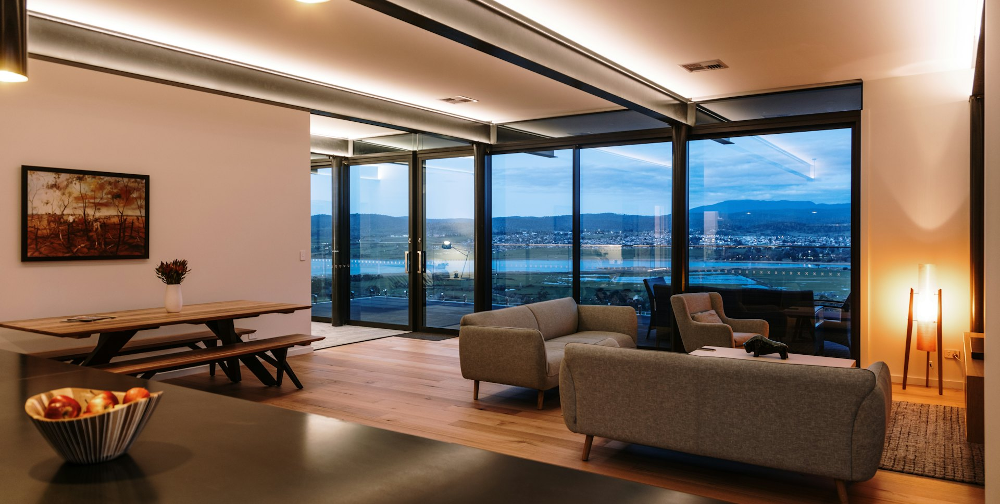

supporta
menu
Início
Slider parallax
Slider com transição
Slider carrossel
Portfólio
Portfólio estilo 1
Portfólio estilo 2
Portfólio estilo 3
Portfólio estilo 4
Portfólio estilo 5
Novidades
Blog com barra lateral
Blog sem barra lateral
Blog em lista
Blog em cards
Páginas
Projeto
Artigo
Página 404
Sobre
Contato
01
/ 04
tendência
legado
do arco-íris
Ver projeto

02
/ 04
design
dança e
vida noturna
Ver projeto
03
/ 04
design gráfico
vento na
tempestade
Ver projeto
04
/ 04
tendência
esmeralda da
infância
Ver projeto
Modelo de site da
Supporta
Quero um assim
✕